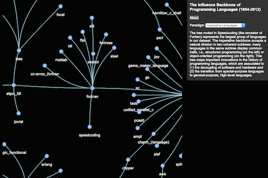

by Sergi Valverde and Ricard V. Solé
Is cultural evolution similar to biological evolution? In our paper Punctuated Equilibrium in the Large-Scale Evolution of Programming Languages (Journal of Royal Society Interface, in press), we have studied the natural and almost biological evolution of programming languages, which have deeply marked social and technological advances in the last 60 years. Technological change is very difficult to study because there is no established framework. Network theory allows us to analyse their historical connections and provides a systematic way of reconstructing phylogenetic networks. Our method can be extrapolated to other cultural systems and consistently captures the main classes of artificial languages and the widespread horizontal design exchanges, revealing a punctuated evolutionary path.
The digital world is a modern Tower of Babel. Instead of a single tongue, developers design software systems using several languages at the same time. Some of these languages are specialised in handling images or complex sound processing and others perform queries in very large databases. To understand the complexity of information technologies, one has to realize first that programming languages have reached a stage of immense creativity and constant experimentation with new ideas. This resembles the earlier stages of biological evolution, which are characterized by periods of rapid speciation and diversification (like the Cambrian explosion). The almost biological evolution of programming languages means that the structures they build are becoming increasingly complex (see previous figure). An important challenge is how to properly define evolutionary trees or clades in the history of programming languages. This is mainly because we do not have an accepted definition of "cultural genome". Fortunately, each language leaves an imprint in technological evolution and we can use network analysis to learn how to track that down.
Our method is based in public Wikipedia data and maps what languages influence each other. We use a simple network measure of similarity between languages, very much like recommendation algorithms used by Amazon. Although the method is quite simple, it yields consistent results with current knowledge about programming languages:
 Click here for navigating the Influence Backbone.
Using both data analysis and network modelling, it is shown that programming language evolution is highly uneven, marked by innovation events where new languages are created out of improved combinations of different structural components belonging to previous languages. These radiation events occur in a bursty pattern and are tied to novel technological and social niches. Our method can be extrapolated to other systems and consistently captures the major classes of languages and the widespread horizontal design exchanges, revealing a punctuated evolutionary path.
Published on May 14th 2014 by Sergi Valverde (@svalver).